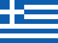
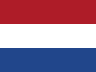

Signature moment
Toast under the Castle
Lights down, glasses up, Prague Castle lit above the bow. The toast is raised by Leoš Mauer and NATO DIANA HQ. doplnit: finální znění přípitku


19 DIANA accelerators · one fleet · tonight aboard one ship
Tonight
The NATO DIANA Accelerators Prague Summit Dinner brings together NATO DIANA, allied armed forces, Ukraine, government, industry, startups and investors on one deck for one evening. Each of us came as a ship. Tonight we sail as a fleet. This page is your guide: what happens when, what is served, and where to be.
Programme
Three hours on the river, one deck, no seating plan. Items marked doplnit are still being fixed with the captain and the host.
Dvořákovo nábřeží by Čech Bridge. Your boarding pass is your name badge: collect it at the gangway. The bar is open from the moment you step aboard, so help yourself to anything on it.
The Bohemia Rhapsody casts off. doplnit: trasa plavby
A short welcome from the host. Why Prague, why tonight, why a fleet.
Leoš Mauer · Defence Hub CzechInvestCanapés on trays, hot and cold buffet, open bar. See Food & drink.
Your badge names the people we think you should meet. Find them, or ask the crew to make the introduction.
As the ship turns beneath the lit Castle the lights go down for the toast of the evening, and a photo from the bow.
Leoš Mauer & NATO DIANA HQdoplnit: kdo hraje a kdy, nebo blok smazat
Return to Dvořákovo nábřeží, pier 3. Disembark at your leisure.
What’s on
Signature moment
Lights down, glasses up, Prague Castle lit above the bow. The toast is raised by Leoš Mauer and NATO DIANA HQ. doplnit: finální znění přípitku
Networking
Every badge carries the names worth meeting tonight: a match made before you boarded. The crew will make the introduction if you ask.
Deal corner
Shook hands on something? Tell the crew. There is a spot on deck with the Castle behind you for the photo, and we follow up within 48 hours.
Photo & video
A photographer is aboard. Pictures and short clips will be shared with guests after the evening. If you would rather not be photographed, let the crew know.
Food & drink
A standing reception, so you can keep moving between conversations. Canapés go round on trays, the buffet is open through the cruise, and the bar is open from boarding: everything on it is yours.
The ship
One glass deck with a sliding glass roof, heated and air-conditioned, with a restaurant and bar on board. The evening goes ahead whatever the weather.
Route map of tonight’s cruise. doplnit: route-map.html z design projektu
The river
The Vltava runs north through Prague, so we head upstream first. The west bank with the Castle sits to starboard on the way out and to port on the way home. The order below follows the usual run to Vyšehrad and back. potvrdit trasu s kapitánem
The first bridge we pass under is Prague’s shortest across the Vltava, 169 metres, and its only Art Nouveau one. Built 1905 to 1908 to the design of architect Jan Koula, it is named after the poet Svatopluk Čech. The bronze figures of Victory holding torches on the tall columns at each end are by Antonín Popp.
Look up: the hill ahead of the bridge is Letná. The giant metronome on top (1991) stands where the largest Stalin monument in Europe stood from 1955 until it was blown up in 1962.The neo-Renaissance building with the rooftop statues opened in 1885 as a concert hall and gallery, and is home to the Czech Philharmonic. Its Dvořák Hall is where the composer himself conducted the orchestra’s first concert in 1896.
Between the wars it was not a concert hall at all: from 1919 to 1939 it housed the Chamber of Deputies of the new Czechoslovak parliament.
Founded around 880 by Prince Bořivoj, the Castle has been the seat of Bohemian dukes and kings, Holy Roman Emperors and, since 1918, Czech presidents. Guinness lists it as the largest coherent castle complex in the world, roughly 70,000 square metres.
The cathedral that crowns it took 585 years. Charles IV laid the foundation stone in 1344 and brought in Matthias of Arras and then Peter Parler to build it; the west towers you see were finished only in 1929, in time for the millennium of St Wenceslas.
Tonight: as the ship turns beneath the lit Castle, the lights on deck go down. That is your cue to step out and raise a glass.Charles IV founded it in 1357 and Peter Parler built it; legend has the first stone laid at 5:31 on 9 July 1357, a palindrome of odd numbers (1-3-5-7-9-7-5-3-1) chosen by the court astrologers. Until 1841 it was the only crossing of the Vltava in Prague, which made it the city’s trade route and, more than once, its battlefield.
The 30 statues came later, mostly Baroque, between 1683 and 1714. The first and most famous is St John of Nepomuk, thrown from this bridge into the river in 1393 on the orders of King Wenceslas IV.
Look for: the Old Town Bridge Tower on the port side, Parler’s work too, and one of the finest Gothic gate towers in Europe.The island of Kampa is cut off from the Lesser Town by the Čertovka, the “Devil’s Stream”, a millrace dug in the 12th century. The large wooden wheel you can see still belongs to the Grand Priory Mill, which worked until 1936. Locals call the stretch Prague’s Venice.
A few steps inland is the John Lennon Wall, where Prague’s young painted songs and slogans the regime kept whitewashing throughout the 1980s.
Střelecký ostrov takes its name from the marksmen’s guild that practised here from the 16th century. In 1882 it hosted the first mass gymnastics rally of the Sokol movement, the start of a tradition that filled stadiums for a century.
The bridge that steps across it is the Legion Bridge (1898 to 1901), named for the Czechoslovak Legions of the First World War.
Paid for by public collections under the motto Národ sobě, “the nation to itself”, the theatre opened in June 1881, burned down in August, and was rebuilt from a second collection in two years. It reopened in 1883 with Smetana’s opera Libuše, written for the occasion.
Look for: the gilded roof and the two bronze chariots. The foundation stones inside were brought from mountains and sites all over the Czech lands.The cream palace on the island has been Prague’s ballroom since the 1830s. Berlioz and Liszt performed here, and in June 1848 the island hosted the Slavic Congress, the first gathering of Slavic nations under the Habsburg crown, cut short by the Prague uprising that same month.
“Fred and Ginger”, by Vlado Milunić and Frank Gehry, finished in 1996 on a corner left empty since an American bombing raid on 14 February 1945, when crews bound for Dresden hit Prague by mistake. Václav Havel grew up in the house next door and backed the project.
Legend puts the beginning of Prague on this rock: Princess Libuše is said to have stood here and foretold a city “whose glory will touch the stars”. History puts a royal seat here in the 11th century, when Vratislav II ruled from Vyšehrad rather than the Castle.
The twin neo-Gothic spires belong to the Basilica of St Peter and St Paul (towers completed 1903). Behind it lies the Vyšehrad cemetery and the Slavín tomb, the resting place of Dvořák, Smetana, Mucha and the Čapek brothers.
Heading back downstream, the wooded hill to port is Petřín. The lookout tower on top (1891, 63.5 metres) was built for the Jubilee Exhibition as Prague’s answer to the Eiffel Tower, two years after Paris. Below it runs the Hunger Wall, which Charles IV commissioned in 1360, according to tradition to give the poor paid work.
Last look: the Castle slides past once more, this time to port, before we come alongside at Dvořákovo nábřeží.Practical
Everything you need before you leave the hotel. Anything else, ask your hosts or anyone wearing a crew badge.
Director, Defence Hub CzechInvest, and head of the NATO DIANA accelerator for Czechia. He raises the toast beneath the Castle.
Defence Hub CzechInvest. She put this evening together. Anything you need on board, from an introduction to a taxi, start with her.
Partners of the evening
After the evening
Photos, clips and the follow-ups you asked for reach you within 48 hours. Until then: enjoy the river.